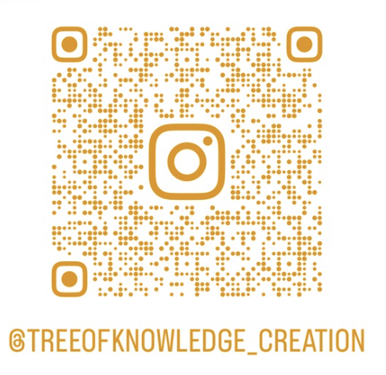

We’re here with a mission - to open the floodgates of collaborative creation.
The Tree of Knowledge is an artwork like no other - its mysteries await!
We brought you the Chakra Tunnel last year, now we need your help to turn a new dream into reality. Any donation helps, big or small!
Scroll down to read more below, and follow our journey on Instagram
Click on the above image to follow us on Instagram!
In the beginning… a neuron fired, spreading the seed of an idea, riding high on a wave of electrical signals to propagate in the fertile mind of an earthling, something magical that had never been thought into fruition before.
Behold!
The vision of a beautiful tree began to sprout, rising out of the Tankwa dust - a symbol of Creation itself.
Let’s make manifest!
For Creation is the process of bringing that ethereal spark into material existence. And because many hands make light work - you’re needed!
Come join in the creation, add your energy to the Tree of Knowledge, make your own mark & help create a work of art that is more than mere fancy.
When your work is done, search amongst its leafy heights to find the key to our humanness.
Meet the smooth tongued serpent suspended, whispering sibilant secrets to those who care to listen.
Eat of the fruit - if you dare!
Choose day, choose night. You decide.
For amongst it’s leafy bower, you choose to live or you choose to die.
Choose to dance, to fly, to breathe, to know, or to deny.
Join us there, because here all the answers lie.